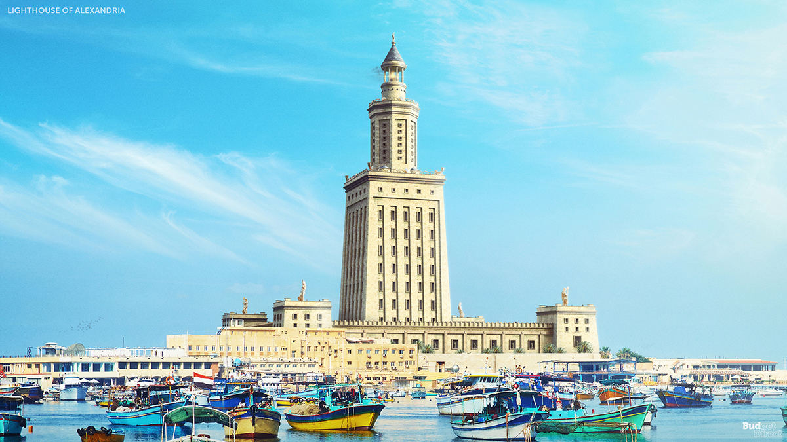

Švyturio paskirtis – padėti orientuotis laivams, plaukiantiems į Aleksandrijos uostą – nulėmė ir statybos vietą – nedidelę Faro salelę netoli Aleksandrijos (Egiptas). Statyba truko apie 20 metų ir buvo baigta 283 m. pr. m. e. Arabiškųjų rašytinių šaltinių duomenimis, apie 117 m aukščio, baltu marmuru dengtas švyturys buvo trijų pakopų bokštai: ~65 m aukščio kvadratinis pagrindas, kuriame gyveno darbininkai ir kareiviai, ant jo – ~30 m aukščio aštuonkampis bokštas, pagal pagrindinių vėjų kryptis, padengtas marmuru su spiraliniu pandusu; trečiasis bokštas buvo apvainikuotas 9 m aukščio kupolu ir paremtas marmurinimės kolonomis; tarp jų degė švyturio ugnis, (laterna). Švyturio viršūnę puošė bronzinė skulptūra (nurodomi variantai – Dzeusas, Poseidonas, tritonai). Naujausieji tyrinėjimai (pagal 1994 m. jūros dugne rastus švyturio likučius) leidžia daryti prielaidą, kad statinio aukštis galėjo siekti net 134 mеtrus. Taigi jis buvo vienas iš aukščiausių planetos statinių, nusileisdamas tik Gizos piramidėms.
